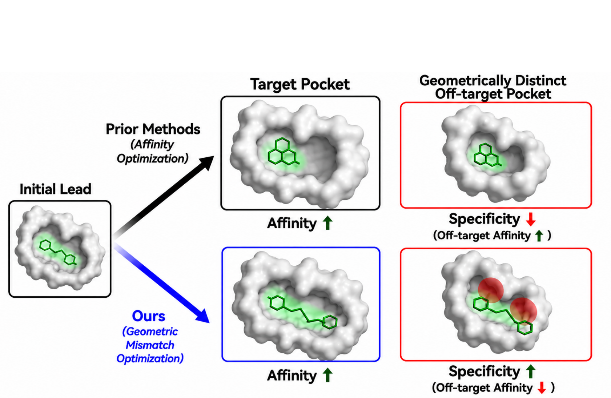
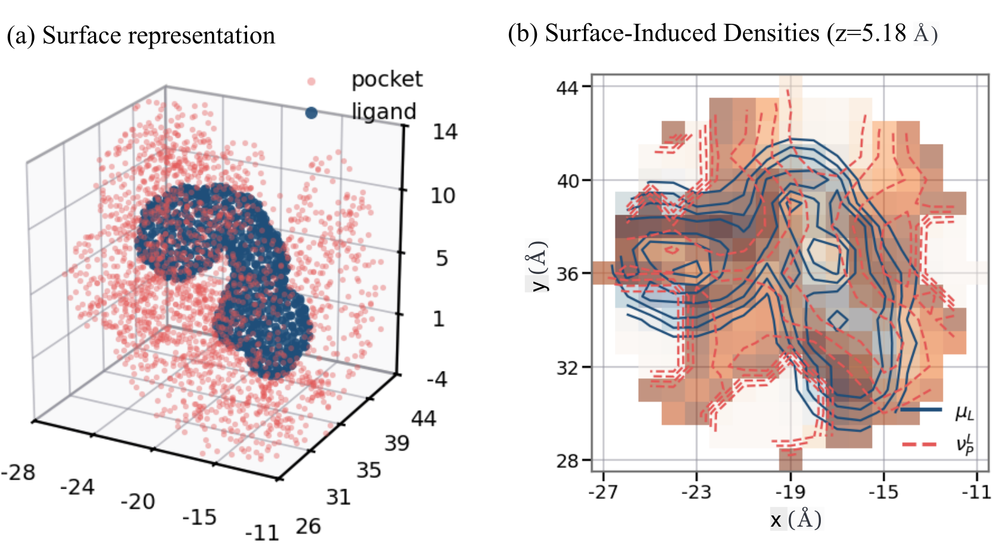
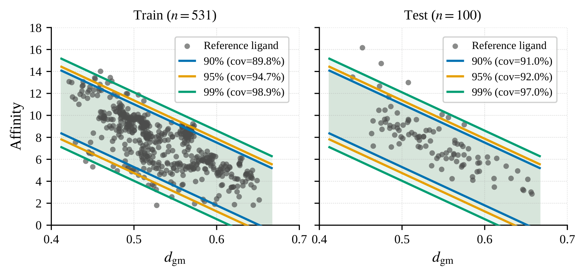
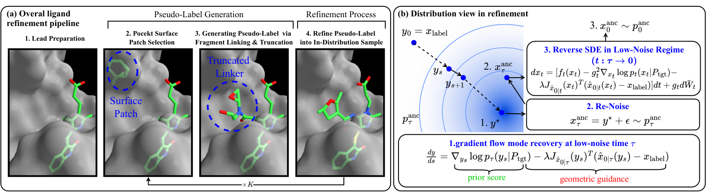
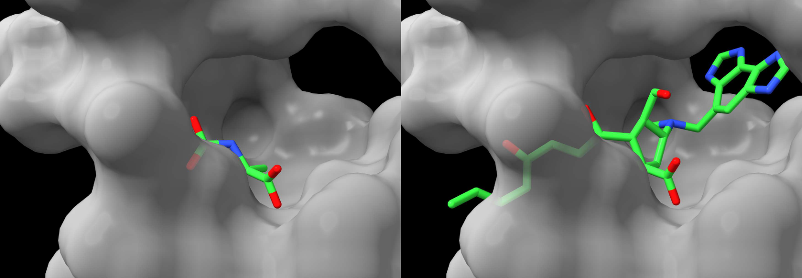
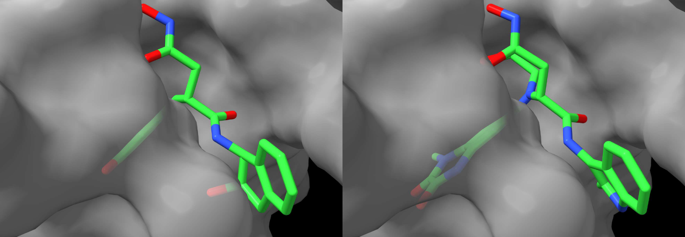
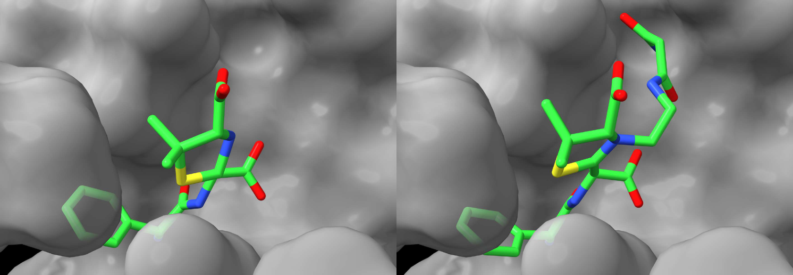

NeurIPS 2026 Workshop on GenAI for Health (GenAI4Health)
SurfSpec: Enhancing Off-Target-Agnostic Specificity by Bounding Pocket-Ligand Geometric Mismatch
1KAIST 2Seoul National University 3Calici 4AITRICS
* Equal contribution · † Corresponding author
Abstract
TL;DR Growing a ligand into unoccupied regions of its target pocket improves average docking-based specificity on CrossDocked2020, with off-target pockets used only for evaluation.
Lead optimization in structure-based drug design aims to improve target binding while avoiding unintended interactions with off-target pockets. However, existing affinity-driven methods do not explicitly control specificity, whereas current specificity-aware approaches commonly require prior knowledge of off-target structures. We address off-target-agnostic specificity-aware lead optimization, in which only the target pocket is accessible during optimization, by using target-surface complementarity as an actionable target-only principle. We introduce SurfSpec, an off-target-agnostic lead optimization framework that iteratively grows ligands toward under-occupied regions of the target pocket surface. SurfSpec alternates between linker generation toward selected target-surface patches, which provides geometric pseudo-labels, and refinement under a pocket-conditioned ligand prior, which restores these pseudo-labels into valid ligands.
On the CrossDocked2020 test set, SurfSpec reduces geometric mismatch and, under the submitted evaluation protocol, obtains higher reported average empirical specificity than the evaluated off-target-agnostic lead optimization baselines while maintaining competitive target-affinity improvement. As supporting theory, we metricize pocket–ligand mismatch and derive a conservative worst-case specificity lower bound for geometrically separated off-targets through the triangle inequality and an empirical geometry–affinity calibration. The certificate is not intended as a tight estimator of realized off-target mismatch.
Designing for one pocket

Method and Theory
What can the target pocket tell us?
A ligand \(L\) is specific to a target \(T\) when its affinity there exceeds its affinity for the strongest competitor in the off-target set \(\mathcal O\). Write \(S_L\) for this specificity gap. Higher \(A\) means stronger binding. During optimization only \(T\) is available, so SurfSpec measures how closely the ligand matches its surface.
Here \(\mu_L\) and \(\nu_T^L\) are probability distributions built from the ligand surface and the nearby aligned pocket surface. Their Jensen–Shannon distance is small when the two surface fields agree.
The first figure turns surfaces into a distance the method can measure. The second compares that distance with docking-based affinity on reference structures. The spread around the fitted line shows the uncertainty in using geometry as a proxy.
Measuring the fit


Relating geometry to affinity


A lower bound for geometrically distinct off-targets
Write \(\epsilon=d_{\rm gm}(L,T)\) for the target mismatch. Suppose a finite class of off-targets stays at least \(\delta\) from the target in surface distance throughout optimization. By the triangle inequality, each off-target’s mismatch with the ligand has a floor.
Here \([x]_+=\max(0,x)\). Use the lower affinity envelope \(f_-^\eta\) from Figure 3 for the target and the upper envelope \(f_+^\eta\) for its strongest possible competitor. Under the manuscript’s calibration assumption, this gives the specificity certificate
The bound holds with probability at least \(1-(|\mathcal O|+1)\eta\), where \(\eta\) is the per-pair tail probability. Reducing target mismatch can raise this conservative floor. Its strength depends on geometric separation, and its confidence decreases as the off-target set grows.
SurfSpec uses this geometry to decide where to grow next. Read the pipeline from the uncovered target surface on the left to the refined ligand on the right.
Surface-directed ligand growth

Results
On CrossDocked2020, each target is evaluated against ten randomly sampled off-target pockets. Higher empirical specificity means a larger docking-based preference for the intended pocket over the strongest evaluated off-target. Mean geometric mismatch is 0.540 for the initial leads and 0.480 for SurfSpec. The mean docking-based specificity moves from −0.83 to −0.71, the highest reported mean. The negative value shows that the strongest sampled off-target still scores better on average.
| Method | Off-target agnostic | Empirical specificity ↑ | Geometric mismatch ↓ | Occupancy ↑ | Vina Dock ↓ | Clash rate ↓ | Atoms | ||||||||||
|---|---|---|---|---|---|---|---|---|---|---|---|---|---|---|---|---|---|
| Mean | SD | > 0.2 | > 0.4 | > 0.6 | Mean | SD | Median | Mean | Q1 | Q3 | Mean | Q1 | Q3 | ||||
| Initial Lead | Yes | -0.83 | 1.39 | 0.15 | 0.13 | 0.11 | 0.540 | 0.051 | 0.536 | 0.26 | 0.22 | 0.30 | -7.17 | -8.67 | -5.73 | 0.00 | 22.75 |
| Delete | Yes | -0.84 | 1.35 | 0.15 | 0.12 | 0.11 | 0.539 | 0.052 | 0.535 | 0.26 | 0.22 | 0.30 | -7.23 | -8.65 | -5.73 | 0.00 | 22.85 |
| PMDM | Yes | -1.16 | 2.48 | 0.12 | 0.09 | 0.08 | 0.501 | 0.056 | 0.489 | 0.33 | 0.27 | 0.38 | -6.47 | -8.87 | -5.10 | 0.16 | 31.00 |
| DecompOpt | Yes | -0.97 | 1.79 | 0.12 | 0.09 | 0.07 | 0.542 | 0.053 | 0.536 | 0.25 | 0.22 | 0.29 | -6.08 | -8.26 | -4.49 | 0.02 | 22.75 |
| DiffShape | Yes | -0.97 | 1.33 | 0.13 | 0.09 | 0.06 | 0.585 | 0.115 | 0.555 | 0.14 | 0.00 | 0.25 | -6.90 | -8.33 | -5.20 | 0.11 | 21.91 |
| ActivityDiff | × | -0.89 | 1.42 | 0.15 | 0.13 | 0.12 | 0.538 | 0.054 | 0.529 | 0.27 | 0.23 | 0.31 | -7.07 | -8.35 | -5.39 | 0.11 | 22.89 |
| PMDM–MS2 | Yes | -1.15 | 2.65 | 0.12 | 0.11 | 0.11 | 0.499 | 0.063 | 0.482 | 0.31 | 0.26 | 0.37 | -8.95 | -10.04 | -7.01 | 0.25 | 33.42 |
| PMDM–MS3 | Yes | -2.11 | 2.66 | 0.07 | 0.05 | 0.05 | 0.496 | 0.069 | 0.480 | 0.31 | 0.26 | 0.37 | -8.38 | -10.51 | -6.43 | 0.31 | 35.83 |
| PMDM–MS+ES | Yes | -0.90 | 1.98 | 0.15 | 0.15 | 0.14 | 0.500 | 0.057 | 0.489 | 0.33 | 0.28 | 0.38 | -8.61 | -10.14 | -6.56 | 0.16 | 31.37 |
| DecompOpt–MS2 | Yes | -1.00 | 1.26 | 0.11 | 0.09 | 0.07 | 0.542 | 0.053 | 0.538 | 0.25 | 0.22 | 0.28 | -7.08 | -8.79 | -5.62 | 0.03 | 22.75 |
| DecompOpt–MS3 | Yes | -0.91 | 1.41 | 0.12 | 0.10 | 0.09 | 0.541 | 0.053 | 0.537 | 0.25 | 0.21 | 0.28 | -7.00 | -8.57 | -5.72 | 0.04 | 22.76 |
| DecompOpt–MS+ES | Yes | -0.80 | 1.39 | 0.14 | 0.11 | 0.09 | 0.541 | 0.052 | 0.534 | 0.25 | 0.22 | 0.28 | -7.40 | -8.91 | -5.95 | 0.03 | 22.75 |
| DiffSBDD–SizeExt(+20) | Yes | -1.71 | 1.84 | 0.05 | 0.05 | 0.05 | 0.480 | 0.037 | 0.476 | 0.28 | 0.19 | 0.38 | -7.57 | -8.25 | -6.37 | 0.45 | 35.88 |
| DiffSBDD–SizeExt(+30) | Yes | -1.81 | 1.97 | 0.03 | 0.03 | 0.02 | 0.468 | 0.046 | 0.461 | 0.32 | 0.23 | 0.42 | -7.14 | -8.40 | -5.44 | 0.62 | 41.58 |
| SurfSpec | Yes | -0.71 | 1.84 | 0.18 | 0.16 | 0.15 | 0.480 | 0.050 | 0.467 | 0.36 | 0.30 | 0.41 | -8.63 | -10.43 | -6.31 | 0.00 | 34.99 |
Threshold columns give the fraction above each specificity cutoff. Methods can have different successfully evaluated subsets, so the aggregates describe this docking protocol. Bold, underlines, and shading reproduce the manuscript.
To isolate the refinement step, the authors fix the starting pseudo-label and the pocket-conditioned prior. Compare target affinity and clash alongside RMSD. Staying close to the proposed extension and finding a plausible pocket-bound pose are distinct objectives.
| Method | Pocket clash ↓ | Target affinity ↑ | Validity ↑ | Bond MMD ↓ | RMSD ↓ | Topological similarity ↑ | |||||||||
|---|---|---|---|---|---|---|---|---|---|---|---|---|---|---|---|
| < 2 Å (%) | Local repulsion | Global repulsion | Local | Global | C–C | C–N | C–O | Mean | Q1 | Q3 | Mean | Q1 | Q3 | ||
| Pseudo label | 0.00 | 1.46 | 7.61 | 0.23 | 6.75 | 0.84 | 0.06 | 0.01 | 0.09 | 0.00 | 0.00 | 0.00 | 1.00 | 1.00 | 1.00 |
| DCDP | 0.02 | 0.83 | 5.38 | 0.43 | 7.69 | 1.00 | 0.08 | 0.03 | 0.10 | 0.62 | 0.55 | 0.67 | 0.48 | 0.35 | 0.62 |
| DPS | 0.03 | 0.20 | 4.88 | 0.39 | 6.49 | 1.00 | 0.11 | 0.04 | 0.11 | 6.17 | 5.44 | 6.79 | 0.35 | 0.25 | 0.46 |
| SDEdit | 0.03 | 1.29 | 6.31 | 0.28 | 7.13 | 1.00 | 0.09 | 0.03 | 0.13 | 0.31 | 0.28 | 0.35 | 0.53 | 0.36 | 0.68 |
| RED-Diff | 0.51 | 5.04 | 42.39 | 0.14 | 1.67 | 1.00 | 0.12 | 0.05 | 0.16 | 1.47 | 0.97 | 2.00 | 0.95 | 0.99 | 1.00 |
| RSD | 0.77 | 9.54 | 106.75 | 0.12 | 0.69 | 1.00 | 0.11 | 0.04 | 0.15 | 2.77 | 1.98 | 3.62 | 0.93 | 0.91 | 1.00 |
| SurfSpec | 0.01 | 0.33 | 4.40 | 0.46 | 8.00 | 1.00 | 0.08 | 0.03 | 0.08 | 0.78 | 0.66 | 0.90 | 0.48 | 0.34 | 0.64 |
Bond MMD measures the discrepancy in bond-length distributions. RMSD and topological similarity measure agreement with the pseudo-label.
The appendix pairs each starting lead with its optimized ligand in the same gray pocket. Flip through the three examples to see where the ligand occupies more of the available surface.
Before and after ligand growth






BibTeX
@inproceedings{hwang2026surfspecenhancingofftargetagnosticspecificity,
title = {{SurfSpec: Enhancing Off-Target-Agnostic Specificity by Bounding Pocket-Ligand Geometric Mismatch}},
author = {Minyeong Hwang and Yoorim Gang and Ziseok Lee and Wooyeol Lee and Young Bin Park and Jae-Mun Choi and Kyungsu Kim and Eunho Yang},
booktitle = {NeurIPS 2026 Workshop on GenAI for Health (GenAI4Health)},
year = {2026},
url = {https://openreview.net/forum?id=xv0Y0Z3yvz}
}